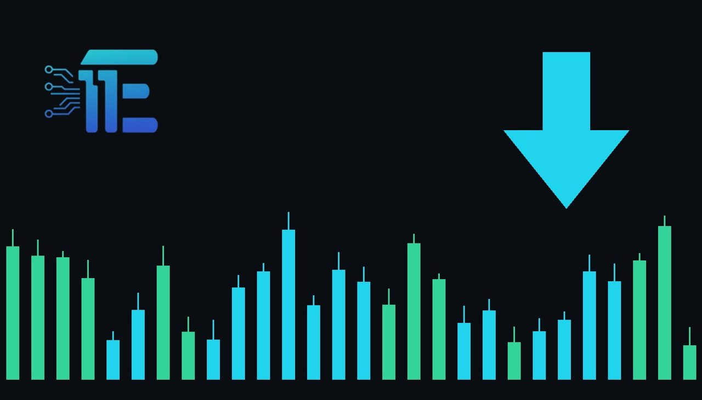

Gold Retreats Toward $4,090 as Middle East Inflation Risks Riseមាសធ្លាក់ចុះឆ្ពោះទៅ $4,090 ខណៈហានិភ័យអតិផរណានៅមជ្ឈិមបូព៌ាកើនឡើង
XAU/USD impact: ▼ Bearishផលប៉ះពាល់លើ XAU/USD: ▼ ធ្លាក់

Spot gold slipped 1.2% to $4,091.66 as Middle East tensions sparked renewed inflation worries across markets. The move highlights how geopolitical inflation fears can complicate gold demand even as the U.S. dollar index retreats.
តម្លៃមាស spot បានធ្លាក់ចុះ 1.2% មកនៅត្រឹម $4,091.66 ខណៈភាពតានតឹងនៅមជ្ឈិមបូព៌ាបានបង្កើនការព្រួយបារម្ភអំពីអតិផរណាឡើងវិញនៅទូទាំងទីផ្សារ។ ចលនានេះបង្ហាញពីរបៀបដែលការបារម្ភលើអតិផរណាអាចដាក់សម្ពាធលើតម្រូវការមាស បើទោះបីជាសន្ទស្សន៍ដុល្លារអាមេរិកធ្លាក់ចុះក៏ដោយ។
Spot gold (XAU/USD) declined 1.2% to $4,091.66 per ounce at 04:59 GMT, while Gold Futures fell 1% to $4,107.05. The retreat coincided with broad selling across the precious metals complex, as silver (XAG/USD) dropped 2.8% to $56.3775 per ounce, platinum (XPT/USD) lost 2.3% to $1,593.95, and palladium (XPD/USD) fell 2.8%. Concurrently, the U.S. Dollar Index softened by 0.2% to 101.58.
តម្លៃមាស spot (XAU/USD) បានធ្លាក់ចុះ 1.2% មកនៅត្រឹម $4,091.66 ក្នុងមួយអោននៅវេលាម៉ោង 04:59 GMT ខណៈតម្លៃ Gold Futures បានធ្លាក់ចុះ 1% មកនៅត្រឹម $4,107.05។ ការធ្លាក់ចុះនេះបានកើតឡើងស្របពេលមានការលក់ចេញយ៉ាងខ្លាំងលើលោហធាតុមានតម្លៃផ្សេងទៀត ដោយប្រាក់ (XAG/USD) បានធ្លាក់ចុះ 2.8% មកនៅត្រឹម $56.3775 ក្នុងមួយអោន ប្លាទីន (XPT/USD) ធ្លាក់ចុះ 2.3% មកត្រឹម $1,593.95 និងប៉ាឡាដ្យូម (XPD/USD) ធ្លាក់ចុះ 2.8%។ ទន្ទឹមនឹងនេះ សន្ទស្សន៍ដុល្លារអាមេរិកបានធ្លាក់ចុះ 0.2% មកនៅត្រឹម 101.58។
The pullback unfolded as escalating tensions in the Middle East stoked concerns over resurging inflation. While geopolitical unrest typically stokes safe-haven demand for gold, inflation worries often reinforce expectations that central banks may need to maintain higher interest rates for longer. This rate dynamic can diminish the appeal of non-yielding bullion, even on days when the US dollar weakens alongside precious metals.
ការដកថយនៃតម្លៃនេះបានកើតឡើងនៅពេលដែលភាពតានតឹងកាន់តែខ្លាំងនៅមជ្ឈិមបូព៌ាបានបង្កើនការព្រួយបារម្ភអំពីការកើនឡើងនៃអតិផរណា។ ទោះបីជាភាពចលាចលភូមិសាស្ត្រនយោបាយជាទូទៅជំរុញតម្រូវការទ្រព្យសុវត្ថិភាពសម្រាប់មាសក៏ដោយ ក៏ការបារម្ភអំពីអតិផរណាជារឿយៗបង្កើនការរំពឹងទុកថា ធនាគារកណ្តាល អាចនឹងត្រូវរក្សាទុកអត្រាការប្រាក់ឱ្យនៅកម្រិតខ្ពស់ក្នុងរយៈពេលយូរ។ កត្តាអត្រាការប្រាក់នេះអាចកាត់បន្ថយភាពទាក់ទាញនៃមាសដែលមិនផ្តល់ផលប័ត្រ ទោះបីជានៅថ្ងៃដែលប្រាក់ដុល្លារអាមេរិកចុះខ្សោយស្របគ្នាជាមួយលោហធាតុមានតម្លៃក៏ដោយ។
From a market mechanics perspective, gold often finds renewed support if geopolitical anxiety dominates trading flows or if rising inflation fuels sustained demand for physical hedges. Conversely, if persistent inflation concerns cause market participants to price in tighter monetary conditions, higher anticipated borrowing costs can continue to exert downward pressure on bullion and related metals.
ផ្អែកលើទស្សនវិស័យទីផ្សារ មាសអាចទទួលបានការគាំទ្រឡើងវិញ ប្រសិនបើការព្រួយបារម្ភផ្នែកភូមិសាស្ត្រនយោបាយគ្រប់គ្រងលើលំហូរជួញដូរ ឬប្រសិនបើការកើនឡើងនៃអតិផរណាជំរុញតម្រូវការការពារហានិភ័យជាបន្តបន្ទាប់។ ផ្ទុយទៅវិញ ប្រសិនបើការបារម្ភអំពីអតិផរណានៅតែបន្តនាំឱ្យអ្នកចូលរួមក្នុងទីផ្សាររំពឹងទុកលក្ខខណ្ឌរូបិយវត្ថុតឹងរ៉ឹង ការកើនឡើងនៃការចំណាយលើការខ្ចីប្រាក់អាចបន្តដាក់សម្ពាធធ្លាក់ចុះលើមាស និងលោហធាតុពាក់ព័ន្ធ។
Traders will likely watch how geopolitical headlines develop in the Middle East and whether inflation concerns continue to reshape monetary policy outlooks. Market participants will also monitor whether the retreat in the US dollar index persists and whether industrial precious metals like silver and platinum stabilize following their steep pullbacks.
អ្នកជួញដូរ ទំនងជានឹងបន្តតាមដានការវិវត្តនៃស្ថានការណ៍ភូមិសាស្ត្រនយោបាយនៅមជ្ឈិមបូព៌ា និងថាតើការព្រួយបារម្ភអំពីអតិផរណានឹងបន្តជះឥទ្ធិពលដល់ទស្សនវិស័យគោលនយោបាយរូបិយវត្ថុដែរឬទេ។ លើសពីនេះ អ្នកចូលរួមទីផ្សារក៏នឹងតាមដានផងដែរថាតើការធ្លាក់ចុះនៃសន្ទស្សន៍ដុល្លារអាមេរិកនឹងបន្តកើតមាន ហើយថាតើលោហធាតុឧស្សាហកម្មដូចជាប្រាក់ និងប្លាទីនអាចរក្សាស្ថិរភាពឡើងវិញបន្ទាប់ពីការធ្លាក់ចុះយ៉ាងគំហុកនេះដែរឬទេ។
Key takeawaysចំណុចសំខាន់ៗ
- Spot gold fell 1.2% to $4,091.66 while Gold Futures declined 1% to $4,107.05.
- តម្លៃមាស spot បានធ្លាក់ចុះ 1.2% មកត្រឹម $4,091.66 ខណៈ Gold Futures ធ្លាក់ចុះ 1% មកត្រឹម $4,107.05។
- Middle East tensions fueled inflation worries despite a 0.2% drop in the US dollar index.
- ភាពតានតឹងនៅមជ្ឈិមបូព៌ាបានបង្កើនការព្រួយបារម្ភអំពីអតិផរណា ទោះបីជាសន្ទស្សន៍ដុល្លារអាមេរិកធ្លាក់ចុះ 0.2% ក៏ដោយ។
- Silver dropped 2.8%, platinum fell 2.3%, and palladium lost 2.8% in broad metal selling.
- ប្រាក់ធ្លាក់ចុះ 2.8% ប្លាទីនធ្លាក់ចុះ 2.3% និងប៉ាឡាដ្យូមធ្លាក់ចុះ 2.8% ក្នុងការលក់ចេញទូទាំងទីផ្សារលោហធាតុ។
Original commentary by THE MARKET CODE, based on public reporting from Yahoo! Finance: GC=F News. Written with the help of AI. Educational only, not financial advice.
មតិវិភាគដើមដោយ THE MARKET CODE ផ្អែកលើការរាយការណ៍សាធារណៈពី Yahoo! Finance: GC=F News។ សរសេរដោយមានជំនួយពី AI។ មាតិកាអប់រំប៉ុណ្ណោះ មិនមែនជាដំបូន្មានហិរញ្ញវត្ថុទេ។